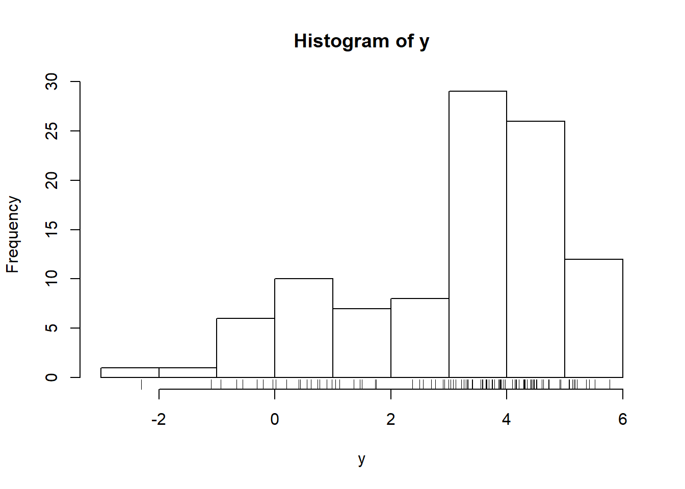
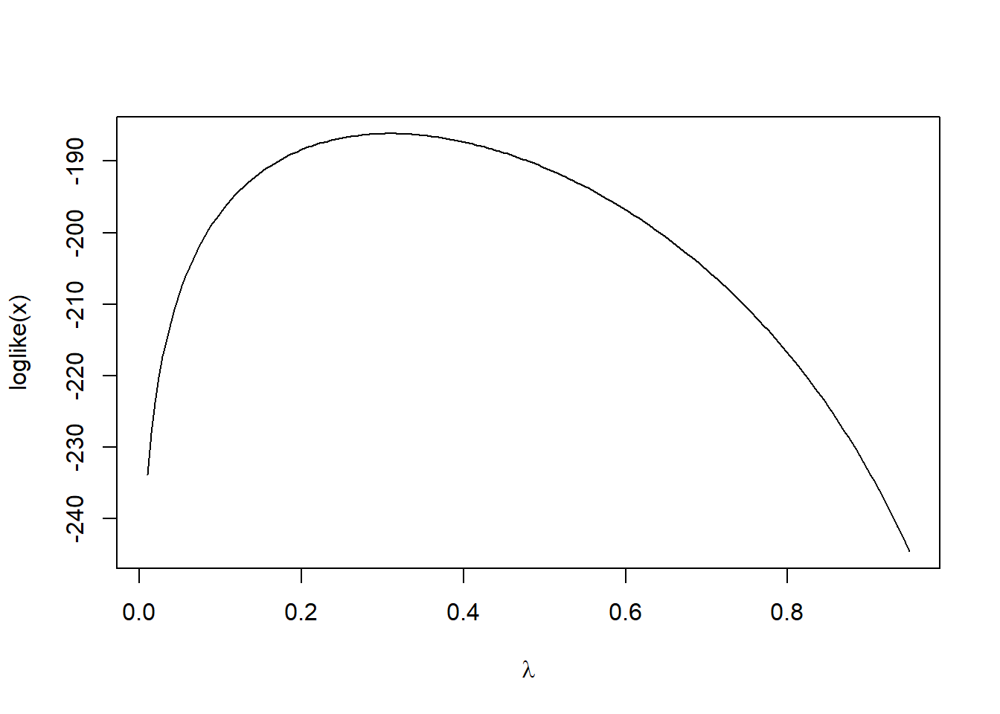

4.5 Acceleration Methods
Dempster et al. showed that the convergence rate for the EM algorithm is linear, which can be painfully slow for some problems. Therefore, a cottage industry has developed around the notion of speeding up the convergence of the algorithm. Two approaches that we describe here are one proposed by Tom Louis based on the Aitken acceleration technique and the SQUAREM approach of Varadhan and Roland.
4.5.1 Louis’s Acceleration
If we let \(M(\theta)\) be the map representing a single iteration of the EM algorithm, so that \(\theta_{n+1} = M(\theta_n)\). Then under standard regularity conditions, we can approximate \(M\) near the optimum value \(\theta^\star\) with
\[ \theta_{n+1} = M(\theta_{n}) \approx \theta_n + J(\theta_{n-1})(\theta_n - \theta_{n-1}) \]
where Dempster et al. 1977 showed that \(J\) is
\[ J(\theta) = I_{Z|Y}(\theta)I_{Z,Y}(\theta)^{-1}, \]
which can be interpreted as characterizing the proportion of missing data. (Dempster et al. also showed that the rate of convergence of the EM algorithm is determined by the modulus of the largest eigenvalue of \(J(\theta^\star)\).)
Furthermore, for large \(j\) and \(n\), we have
\[ \theta_{n + j + 1} - \theta_{n+j} \approx J^{(n)}(\theta^\star)(\theta_{j+1}-\theta_{j}) \]
where \(\theta^\star\) is the MLE, and \(J^{(n)}(\theta^\star)\) is \(J\) multiplied by itself \(n\) times. Then if \(\theta^\star\) is the limit of the sequence \(\{\theta_n\}\), we can write (trivially) for any \(j\) \[ \theta^\star = \theta_j + \sum_{k=1}^\infty (\theta_{k + j} - \theta_{k+j-1}) \]
We can then approximate this with
\[\begin{eqnarray*} \theta^\star & \approx & \theta_j + \left( \sum_{k = 0}^\infty J^{(k)}(\theta^\star) \right) (\theta_{j+1}-\theta_j)\\ & = & \theta_j + (I-J(\theta^\star))^{-1} (\theta_{j+1}-\theta_j) \end{eqnarray*}\]The last equivalence is possible because the eigenvalues of \(J\) are all less than one in absolute value.
Given this relation, the acceleration method proposed by Louis works as follows. Given \(\theta_n\), the current estimate of \(\theta\),
Compute \(\theta_{n+1}\) using the standard EM algorithm
Compute \((I-\hat{J})^{-1} = I_{Y,Z}(\theta_n)I_Y(\theta_n)^{-1}\)
Let \(\theta^\star = \theta_n+(I-\hat{J})^{-1}(\theta_{n+1}-\theta_n)\).
Set \(\theta_{n+1} = \theta^\star\).
The cost of using Louis’s technique is minimal if the dimension of \(\theta\) is small. Ultimately, it comes down to the cost of inverting \(I_Y(\theta_n)\) relative to running a single iteration of the EM algorithm. Further, it’s worth emphasizing that the convergence of the approach is only guaranteed for values of \(\theta\) in a neighborhood of the optimum \(\theta^star\), but the size and nature of that neighborhood is typically unknown in applications.
Looking at the algorithm described above, we can gather some basic heuristics of how it works. When the information in the observed data is high relative to the complete data, then the value of \((I-\hat{J})^{-1}\) will be close to \(1\) and the sequence of iterates generated by the algorithm will be very similar to the usual EM sequence. However, if the proportion of missing data is high, then \((I-\hat{J})^{-1}\) will be much greater than \(1\) and the modifications that the algorithm makes to the usual EM sequence will be large.
4.5.1.1 Example: Normal Mixture Model
Recall that the data are generated as follows.
mu1 <- 1
s1 <- 2
mu2 <- 4
s2 <- 1
lambda0 <- 0.4
n <- 100
set.seed(2017-09-12)
z <- rbinom(n, 1, lambda0)
y <- rnorm(n, mu1 * z + mu2 * (1-z), s1 * z + (1-z) * s2)
hist(y)
rug(y)
If we assume \(\mu_1\), \(\mu_2\), \(\sigma_1\) and \(\sigma_2\) are known, then we can visualize the observed data log-likelihood as a function of \(\lambda\).
f <- function(y, lambda) {
lambda * dnorm(y, mu1, s1) + (1-lambda) * dnorm(y, mu2, s2)
}
loglike <- Vectorize(
function(lambda) {
sum(log(f(y, lambda)))
}
)
curve(loglike, 0.01, 0.95, n = 200, xlab = expression(lambda))
Because the observed log-likelihood is relatively simple in this case, we can maximize it directly and obtain the true maximum likelihood estimate.
op <- optimize(loglike, c(0.01, 0.95), maximum = TRUE, tol = 1e-8)
op$maximum[1] 0.3097386We can encode the usual EM iteration as follows. The M function represents a single iteration of the EM algorithm as a function of the current value of \(\lambda\).
make_pi <- function(lambda, y, mu1, mu2, s1, s2) {
lambda * dnorm(y, mu1, s1) / (lambda * dnorm(y, mu1, s1) +
(1 - lambda) * (dnorm(y, mu2, s2)))
}
M <- function(lambda0) {
pi.est <- make_pi(lambda0, y, mu1, mu2, s1, s2)
mean(pi.est)
}We can also encode the accelerated version here with the function Mstar. The functions Iy and Iyz encode the observed and complete data information matrices.
Iy <- local({
d <- deriv3(~ log(lambda * dnorm(y, mu1, s1) + (1-lambda) * dnorm(y, mu2, s2)),
"lambda", function.arg = TRUE)
function(lambda) {
H <- attr(d(lambda), "hessian")
sum(H)
}
})
Iyz <- local({
d <- deriv3(~ pihat * log(lambda) + (1-pihat) * log(1-lambda),
"lambda", function.arg = TRUE)
function(lambda) {
H <- attr(d(lambda), "hessian")
sum(H)
}
})
Mstar <- function(lambda0) {
lambda1 <- M(lambda0)
pihat <- make_pi(lambda0, y, mu1, mu2, s1, s2)
lambda0 + (Iyz(lambda0) / Iy(lambda0)) * (lambda1 - lambda0)
}Taking a starting value of \(\lambda = 0.1\), we can see the speed at which the original EM algorithm and the accelerated versions converge toward the MLE.
lambda0 <- 0.1
lambda0star <- 0.1
iter <- 6
EM <- numeric(iter)
Accel <- numeric(iter)
for(i in 1:iter) {
pihat <- make_pi(lambda0, y, mu1, mu2, s1, s2)
lambda1 <- M(lambda0)
lambda1star <- Mstar(lambda0star)
EM[i] <- lambda1
Accel[i] <- lambda1star
lambda0 <- lambda1
lambda0star <- lambda1star
}
results <- data.frame(EM = EM, Accel = Accel,
errorEM = abs(EM - op$maximum),
errorAccel = abs(Accel - op$maximum))After six iterations, we have the following.
format(results, scientific = FALSE) EM Accel errorEM errorAccel
1 0.2354541 0.2703539 0.0742845130 0.039384732683244
2 0.2850198 0.3075326 0.0247188026 0.002206035238572
3 0.3014516 0.3097049 0.0082869721 0.000033703087859
4 0.3069478 0.3097384 0.0027907907 0.000000173380975
5 0.3087971 0.3097386 0.0009414640 0.000000006066448
6 0.3094208 0.3097386 0.0003177924 0.000000005785778One can see from the errorAccel column that the accelerated method’s error decreases much faster than the standard method’s error (in the errorEM column). The accelerated method appears to be close to the MLE by the third iteration whereas the standard EM algorithm hasn’t quite gotten there by six iterations.
4.5.2 SQUAREM
Let \(M(\theta)\) be the map representing a single iteration of the EM algorithm so that \(\theta_{n+1} = M(\theta_n)\). Given the current value \(\theta_0\),
Let \(\theta_1 = M(\theta_0)\)
Let \(\theta_2 = M(\theta_1)\)
Compute the difference \(r = \theta_1-\theta_0\)
Let \(v = (\theta_2-\theta_1) - r\)
Compute the step length \(\alpha\)
Modify \(\alpha\) if necessary
Let \(\theta^\prime = \theta_0 - 2\alpha r + \alpha^2 v\)
Let \(\theta_1 = M(\theta^\prime)\)
Compare \(\theta_1\) with \(\theta_0\) and check for convergence. If we have not yet converged, let \(\theta_0 = \theta_1\) and go back to Step 1.